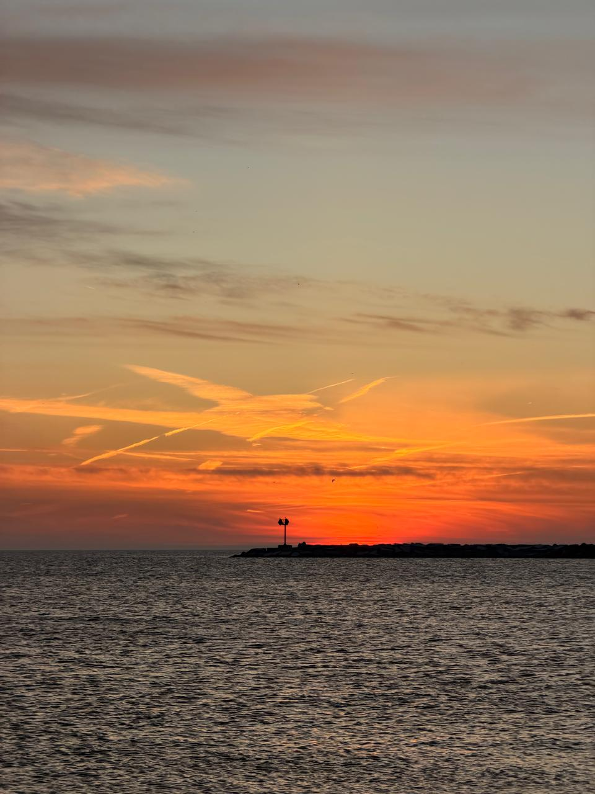

Colors in Motion
A moment filled with color, energy, and the reminder that creativity can be found everywhere.
A collection of places, experiences, and small moments that became part of my journey.
A moment filled with color, energy, and the reminder that creativity can be found everywhere.
Small scenes that felt worth remembering.
A quiet pause surrounded by nature, away from screens, deadlines, and everyday noise.

A quiet evening where the changing colors made the world feel still for a moment.
Not every meaningful moment needs a plan. Sometimes it begins by simply stopping long enough to notice what is around us.
One of those calm days where the view made everything feel slower, simpler, and more peaceful.
Some of the most memorable stories begin with an ordinary day, an unexpected view, or a quiet pause.
Exploring a new city, discovering unfamiliar places, and collecting memories along the way.
Some of the best memories were never part of the plan.
A view that made everything else feel smaller and reminded me how powerful and peaceful nature can be.
Progress is not always fast or visible, but every step still brings us closer to a new perspective.
A winter moment that turned an ordinary day into something beautiful and memorable.
Every new place adds another perspective, another memory, and another story worth keeping.
The sound of the waves and the open horizon created the kind of calm that is difficult to describe but easy to remember.
New places often leave us with more than photographs. They leave us with new energy, ideas, and stories.
A simple reminder to pause, look around, and appreciate the peaceful moments between busy days.
A place, a feeling, and a story kept together.